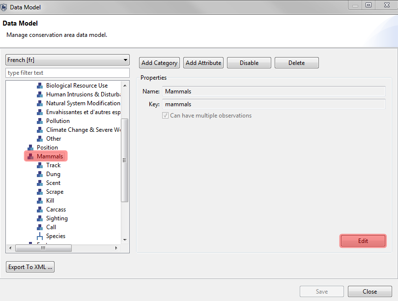
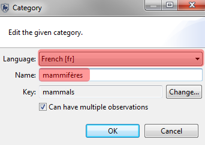
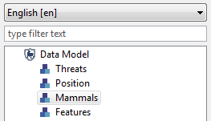
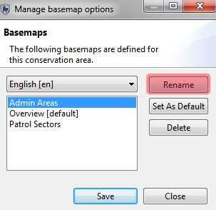
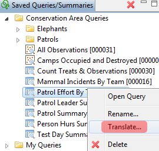

El apoyo multi-idioma de SMART se puede dividir en dos componentes principales. El primer componente es el apoyo para traducir el software principal para exhibir en el software todo el texto, botones, menús, etc en el(los) idioma(s) soportado(s). El segundo componente es proporcionar apoyo para cambiar los registros al modelo de datos, las consultas, los informes y los otros tipos de textos creados por el usuario.
Apoyo para múltiples idiomas en SMART para textos creados por el usuario o textos no proveniente del software se realiza directamente dentro de SMART. La pantalla Propiedades del área de conservación es donde los idiomas se pueden agregar a un área de conservación. Al hacer clic en el botón "Añadir," un cuadro de diálogo se abrirá para ver los idiomas que pueden ser soportados por el Área de Conservación.
Después que los idiomas adicionales se han hecho disponibles, las traducciones para los idiomas aún deben llevarse a cabo. Los métodos para la traducción de la información definida por usuarios (modelos de datos, consultas, etc ..) son diferentes y serán descritas en las siguientes secciones. Todos los ejemplos se llevarán a cabo utilizando el idioma alternativo del francés.
Modelo de Datos
La traducción de las entradas de modelo de datos se lleva a cabo a través de la propiedad "Nombre" de la categoría o el atributo. La propiedad nombre puede ser considerado un alias con el nombre real siendo la clave.
Advertencia: No cambie la clave a menos que este absolutamente seguro de lo que está haciendo y entienda qué problemas pueden surgir al cambiar la clave.
La siguiente ruta de trabajo se aplica a categorías, atributos y valores en los árboles y las listas. Cada ingreso en el modelo de datos requerirá traducciones individuales. Para cada ingreso, el usuario tendrá que seleccionar la categoría, atributo o valor y hacer clic en Editar.

A la izquierda está la entrada original en Inglés. Para completar la traducción, seleccione el idioma alternativo en la lista desplegable y escriba la traducción adecuada en el campo de nombre.


El idioma predeterminado (inglés) muestra los nombres originales de los modelos de datos (ver a la izquierda). Después de seleccionar el idioma alternativo (francés), los ingresos traducidos aparecerán con las nuevas traducciones.


Traducciones de Instituciones y Lista de Cargos
Traducciones de Instituciones y Lista de Cargos sigue el mismo procedimiento que los modelos de datos. Selecciona el idioma alternativo. Introduzca las traducciones en el idioma alternativo.

Traducciones de Estaciones
Traducciones de Estaciones sigue el mismo procedimiento que el modelo de datos. Seleccione el idioma alternativo. Introduzca las traducciones en el idioma alternativo.

Nota: Los mandatos de patrullaje, Tipos de patrullaje y equipos de patrullaje todos siguen el mismo procedimiento de traducción como las estaciones.
Traducciones de Mapas de Base
Traducciones de mapas de base y otros componentes de SMART se llevan a cabo a través de la función "Cambiar Nombre" o "Traducir." Selecciona el registro para traducir y haz clic en el botón de "Cambiar Nombre."
La ventana "Traducir Nombres" se abre, mostrando los nombres soportados. Traducción directa del registro para los idiomas alternativos puede suceder en esta ventana, sin tener que seleccionar previamente el idioma alternativo.


Traducciones de Consultas, Informes, Planes y Registros de Inteligencia
Para traducir las consultas, informes, planes o registros de inteligencia, el usuario puede oprimir el botón derecho para abrir el menú del mouse y seleccionar "Traducir". Una ventana "Traducir Nombres" se abre, el cual contiene el resto de los idiomas compatibles. El siguiente ejemplo demuestra el proceso mediante una consulta. Traducciones de Informes, Planes y Registros de Inteligencia siguen el mismo procedimiento.


En lugar de almacenar traducciones dentro de la base de código principal, traducciones son creadas como fragmentos "plug-in" en Eclipse. Los fragmentos pueden luego ser compilados para crear un paquete de idioma que se puede añadir a una aplicación ya existente e instalada sin la necesidad de actualizar toda la aplicación.
Los paquetes de idioma se pueden proveer a los usuarios a través de una página web, desde la cual los usuarios pueden descargar sólo el(los) paquete(s) de idioma(s) de interés para ellos.
Este enfoque hace que sea mucho más fácil proporcionar nuevas traducciones y mejorar traducciones existentes y provee una mayor flexibilidad a los usuarios.
Dependencias SMART
Traducciones no se incluyen en la construcción predeterminada de la aplicación. Los paquetes de idioma son disponibles para que los usuarios puedan instalar en su versión de SMART para que puedan soportar varios idiomas. Los paquetes de idioma se encuentran en la misma ubicación que la aplicación de SMART.
Para instalar un paquete de idioma:
1. Descargue el paquete de idioma que desee (por ejemplo: smart_1.0.5_languagepack_fr.zip).
2. Descomprime el contenido del paquete de idioma en su directorio de instalación SMART
El paquete de idioma contiene "plugins" y directorios de "características". El contenido de estos dos directorios deben ser combinados con el contenido de los directorios "SMART/features" (SMART/caracteristicas) y "SMART/plugins." Asegúrese de unir estos directorios y de ahí borrar y reemplazar.